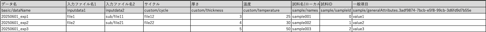

SmartTableInvoiceモードとは
目的
テーブルファイル（Excel/CSV/TSV）からメタデータを読み取り、自動的にinvoice.jsonファイルを生成するモードです。
特徴
- 多形式対応: Excel (.xlsx)、CSV、TSVファイルの読み込み
- 2行ヘッダー形式: 1行目に表示名、2行目にマッピングキーを配置
- 自動メタデータマッピング:
basic/、custom/、sample/プレフィックスによる構造化データ生成 - zipファイル統合: データファイルを含むzipとテーブルファイルの自動関連付け
使用場面
- 複数のファイルを関連づけて複数データ登録したい場合
設定方法
設定ファイルの変更は不要です。ただし、入力データに、smarttable_という接頭辞がついたExcel/CSV/TSVファイルを配置する必要があります。
smarttable_tabledata.xlsxsmarttable_imagedata.csvsmarttable_20250101.tsv
テーブルデータのフォーマット
全体像
1 2 3 4 5 6 7 8 9 | |

1行目： 表示名（ユーザー向けの説明）
ここはデータ登録には関係ないですが、このテーブルデータを管理するときにどのようなデータかをわかりやすくするために、表示名を記載します。
1 | |
2行目: マッピングキー
メタデータのマッピングと展開
この行を読み取って、invocie.jsonやメタデータ等に自動でマッピングされます。マッピングされるルールは以下のとおりです。
basic/<invoice.jsonのキー名>: invoice.jsonのbasicセクションにマッピングされます。custom/<invoice.jsonのキー名>: invoice.jsonのcustomセクションにマッピングされます。sample/<invoice.jsonのキー名>: invoice.jsonのsampleセクションにマッピングされます。sample/generalAttributes.<termId>:generalAttributes配列内の該当するtermIdのvalueにマッピングsample/specificAttributes.<classId>.<termId>:specificAttributes配列内の該当するclassIdとtermIdのvalueにマッピングinputdataX: zipファイル内のファイルパスを指定（X=1,2,3...）
現在自動でテーブルデータの情報が展開される先は、invoice.jsonへの展開のみです。それ以外のデータは、構造化処理で使用できるように展開されます。
入力ファイルの取り扱いについて
inputdata[数値]というキーは、1データタイルに含めたいファイルパスを入力します。zipファイル内のパスを指定します。
- 例えば、
inputdata1にdata1/file1.txtと記載した場合、zipファイル内にfile1.txtが存在する必要があります。 inputdata1とinputdata2にdata1/file1.txtをdata1/file2.txtと記載した場合、構造化処理内で、2つのファイルを読み取ることができるようにグルーピングされます。
3行目以降
実際に登録するデータを記載します。1行1データタイルとして登録されます。
1 2 | |
拡張子
テーブルデータファイルの拡張子は、.csv、.xlsx、.tsvのいずれかである必要があります。
入力ファイルについて
SmartTableInvoiceモードでは、特定の形式の入力ファイルが必要です。これらのファイルは、テーブルデータを含むExcel/CSV/TSVファイルと、関連するデータファイルを含むzipファイルです。
smarttable_imagedata.csvinputdata.zip
ディレクトリ構造
inputdataディレクトリに、Excelファイルとzipファイルを配置します。
1 2 3 4 5 6 | |
1 2 3 4 5 6 7 8 9 10 11 12 13 14 15 16 17 18 19 20 21 | |
テーブルデータの1行分のデータを構造化処理で取得する
構造化処理を以下のように定義した場合、RdeOutputResourcePath.rawfilesからcsvのパスを取得できます。上記のディレクトリ構造の例では、temp/fsmarttable_experiment_0001.csv等になります。
1 2 3 4 5 6 7 8 9 10 11 12 13 14 15 16 17 | |
テーブルデータファイルをRDEに登録する場合
デフォルトでは、SmartTableInvoiceモードで使用したテーブルデータは、RDEに登録されません。設定ファイルrdeconfig.ymlに、以下のように設定することで、テーブルデータをRDEに登録することができます。
1 2 | |